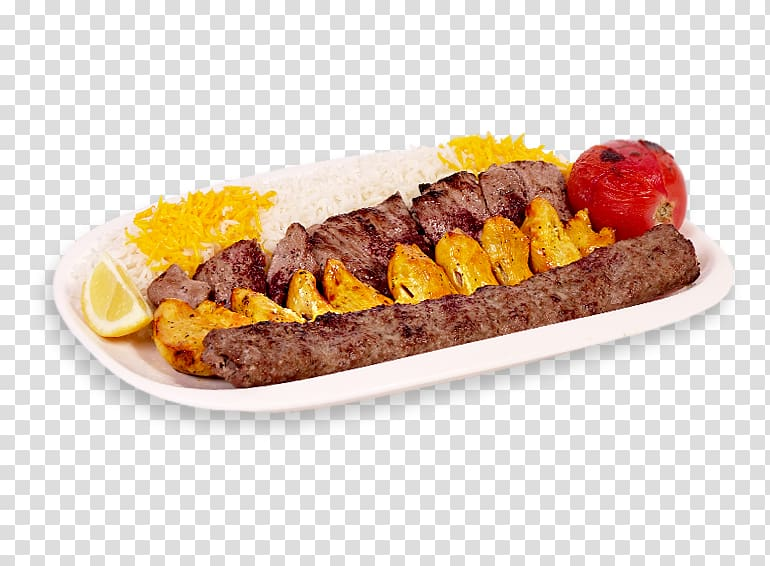

AFGHAN-KEBAB
- 10 - 12 leaves of Fresh Mint leaves
- 10- 12 stems of Cilantro leaves
- 2 tablespoon Fresh cream
- 1 Kg or 2.2 lb Boneless Chicken - washed and cleaned
- 2 teaspoon Garlic paste
- 1.5 teaspoon Ginger paste
- 2 tablespoon Besan (Chickpea flour/ Gram flour)
- 5-7 slices of thick bacon
- 1 cup Curd (thick Market curd/yogurt)
- 1 tablespoon Lemon Juice
- 1 teaspoon Garam Masala Powder
- 1 teaspoon Kasoori or kasuri methi/ dried fenugreek leaves
Ingredients
GRIND TO PASTE
SECOND MARINADE

Recipe breaks down in two parts – first a paste of mint-cilantro leaves along with cream is prepared. Secondly, assemble rest of the ingredients and marinate chicken cubes in it. For tenderizing the meat I have used lemon juice. Leave the marinade for 2-3 hours or overnight. Meanwhile soak some bamboo skewers in water for 30 minute or an hour. When the marination time is over, thread the chicken cubes through the skewers and grill them for 15 – 20 minutes. Remove kebabs from the oven. They should be soft and tender on the inside and beautifully charred on the outside.